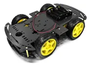

Robô Seguidor de Linha
Projeto acadêmico de automação e controle desenvolvido com Arduino Uno R3.
🧠 Descrição do Robô
O Robô Seguidor de Linha é um projeto desenvolvido com o objetivo de aplicar conceitos de automação, eletrônica e programação embarcada, utilizando o microcontrolador ATmega328P, presente na placa Arduino Uno R3. O robô é capaz de seguir automaticamente uma linha preta sobre uma superfície branca, detectando o percurso por meio de módulos sensores infravermelhos que identificam o contraste e ajustam a direção conforme o trajeto.
⚙️ Estrutura e Componentes Utilizados
- Chassi acrílico 2WD com duas rodas motrizes e uma roda boba;
- 2 motores DC com engrenagens responsáveis pela tração e movimento;
- Ponte H L298N para controle de sentido e velocidade dos motores;
- Sensor ultrassônico HC-SR04 para detecção de obstáculos;
- 4 sensores de linha infravermelhos (TCRT5000) para leitura do trajeto;
- Mini protoboard e jumpers para conexões e testes;
- Suporte para quatro pilhas AA para alimentação independente.
🧩 Especificações Técnicas do Microcontrolador
- Modelo: ATmega328P
- Tensão de operação: 5V
- Frequência do clock: 16 MHz
- Memória Flash: 32 KB
- SRAM: 2 KB
- EEPROM: 1 KB
🔋 Funcionamento
Durante a operação, os sensores infravermelhos detectam o contraste da linha no solo e enviam os sinais para a placa Arduino, que processa os dados e ajusta a velocidade dos motores por meio da ponte H. Assim, o robô se mantém alinhado ao percurso, corrigindo desvios automaticamente. O sensor ultrassônico frontal detecta obstáculos, permitindo ao sistema parar ou desviar conforme necessário.
📦 Conteúdo da Embalagem
- 1x Kit Chassi 2WD Robô Seguidor de Linha
- 2x Rodas motrizes
- 1x Roda boba
- 2x Motores DC com engrenagens
- 2x Discos de código
- 4x Fixadores acrílicos
- 1x Suporte para 4 pilhas AA
- 1x Placa Arduino Uno R3 (ATmega328P)
- 1x Cabo USB
- 1x Ponte H L298N
- 1x Sensor Ultrassônico HC-SR04 com suporte
- 4x Módulos seguidores de linha infravermelho
- 1x Mini Protoboard
- 1x Cabo 9V
- 1x Conjunto de jumpers